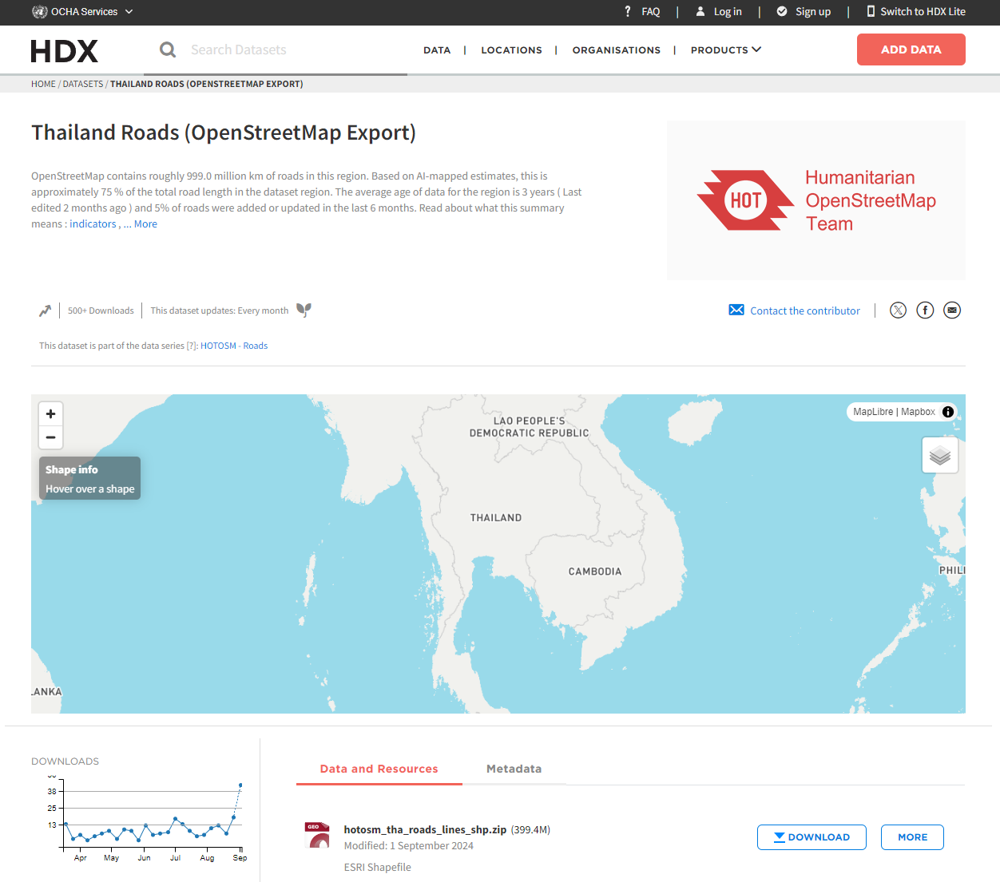
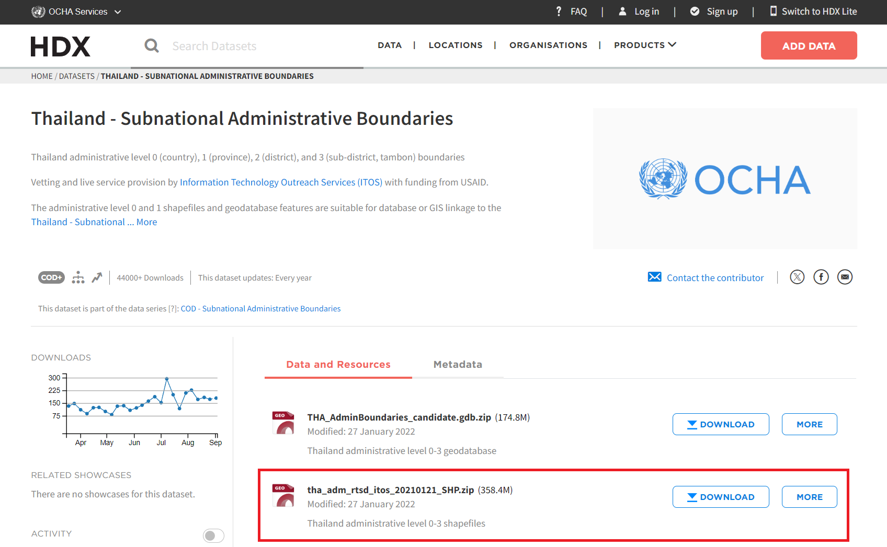

pacman::p_load(sf, tidyverse, tmap, Hmisc)Take-Home Exercise 01
Geospatial Analytics for Public Good
1. Overview
Road traffic accidents result in significant human and economic costs worldwide, with approximately 1.19 million deaths annually and 20-50 million non-fatal injuries, particularly affecting vulnerable road users. In Thailand, about 20,000 people die each year, making it one of the deadliest countries for road accidents. Accidents frequently occur on national highways, with 66% happening on straight roads and specific high-risk zones like curves, intersections and steep slopes.
2. Getting Started
2.1 Objectives
This analysis aims to discover factors that influence road traffic accidents by examining both behavioural and environmental causes through spatial and spatio-temporal point patterns. This includes:
Visualizing spatio-temporal dynamics of accidents
Conducting spatial analysis using Network Spatial Point Patterns Analysis
Conducting spatio-temporal analysis using Temporal Network Spatial Point Patterns Analysis
2.2 The Study Area
The focus of this study would be the Bangkok Metropolitan Region (BMR).

Note: The projected coordinate system of Thailand is WGS84/UTM zone 47N, and the EPSG code is 32647.
2.3 Analytical Tools
The p_load function of pacman package is used to install and loads the analytical tools that we will be using throughout this exercise.
sf for importing, managing, and processing geospatial data
tidyverse for performing data science tasks such as importing, wrangling and visualizing data
tmap for visualizing geospatial objects
Hmisc for summary statistics
3. Data
3.1 Getting the Data
Three basic data sets will be used for this analysis:
Thailand Road Accident [2019-2022] on Kaggle
Thailand Roads (OpenStreetMap Export) on HDX
Thailand - Subnational Administrative Boundaries on HDX
3.1.1 Thailand Road Accident [2019-2022] on Kaggle
Link: https://www.kaggle.com/datasets/thaweewatboy/thailand-road-accident-2019-2022
Note: Kaggle account is required in order to download this dataset.
3.1.2 Thailand Roads (OpenStreetMap Export) on HDX

3.1.3 Thailand - Subnational Administrative Boundaries on HDX

3.2 Storing the Data
At the Take-Home_Ex01 folder, we will create a sub-folder called data. Then, inside this sub-folder, we will create two new sub-folders and name them geospatial and aspatial respectively.
3.2.1 Geospatial Data Sets
We will place the following data files into the geospatial sub-folder:
hotosm_tha_roads_lines_shp.shp
tha_admbndp_admALL_rtsd_itos_20220121.shp
3.2.2 Aspatial Data Sets
We call a data set an aspatial data set because among its data fields, there are two fields that capture the x- and y-coordinates of the data points.
We will place the following data files into the aspatial sub-folder:
- thai_road_accident_2019_2022.csv
3.3 Importing the Data
3.3.1 Importing Thailand Roads Data
The code chunk below uses st_read() function of sf package to import the hotosm_tha_roads_lines_shp.shp shapefile into R as a simple feature data frame. For this code chunk, we will define the data path and the layer to provide the shapefile name.
thaiRoads = st_read(dsn = "data/geospatial",
layer = "hotosm_tha_roads_lines_shp")Reading layer `hotosm_tha_roads_lines_shp' from data source
`C:\byebhai8\ISSS626-GeospatialAnalytics\Take-Home_Ex\Take-Home_Ex01\data\geospatial'
using driver `ESRI Shapefile'
Simple feature collection with 2792590 features and 14 fields
Geometry type: MULTILINESTRING
Dimension: XY
Bounding box: xmin: 97.34457 ymin: 5.643645 xmax: 105.6528 ymax: 20.47168
CRS: NAThe message above reveals that there are a total of 2792590 features and 14 fields in thaiRoads linestring feature data frame, and it the coordinate system (CRS) is currently NA.
3.3.2 Importing Thailand - Subnational Administrative Boundaries Data
Likewise, the code chunk below will use the st_read() function of sf package to import the tha_admbndp_admALL_rtsd_itos_20220121.shp shapefile into R as a simple feature data frame.
admBndrs = st_read(dsn = "data/geospatial",
layer = "tha_admbndp_admALL_rtsd_itos_20220121")Reading layer `tha_admbndp_admALL_rtsd_itos_20220121' from data source
`C:\byebhai8\ISSS626-GeospatialAnalytics\Take-Home_Ex\Take-Home_Ex01\data\geospatial'
using driver `ESRI Shapefile'
Simple feature collection with 7425 features and 23 fields
Geometry type: POINT
Dimension: XY
Bounding box: xmin: 97.49002 ymin: 5.734416 xmax: 105.5628 ymax: 20.43065
Geodetic CRS: WGS 84The message above reveals that there are a total of 7425 features and 23 fields in admBndrs point feature data frame, and it is in wgs84 coordinates system.
3.3.3 Importing Thailand Road Accidents Data
Since thai_road_accident_2019_2022.csv data file is in csv file format, we will use the read_csv() of readr package to import this data as shown in the code chunk below. Note that the output will be in a tibble data frame format.
accidents <- read_csv("data/aspatial/thai_road_accident_2019_2022.csv")Rows: 81735 Columns: 18
── Column specification ────────────────────────────────────────────────────────
Delimiter: ","
chr (10): province_th, province_en, agency, route, vehicle_type, presumed_c...
dbl (6): acc_code, number_of_vehicles_involved, number_of_fatalities, numb...
dttm (2): incident_datetime, report_datetime
ℹ Use `spec()` to retrieve the full column specification for this data.
ℹ Specify the column types or set `show_col_types = FALSE` to quiet this message.The message above reveals that there are a total of 81735 rows and 18 fields in accidents tibble data frame.
4. Data Wrangling
4.1 Aspatial Data Wrangling
4.1.1 Contents of Aspatial Data
Let us examine if the accidents data was imported correctly using the list() function of Base R.
list(accidents)[[1]]
# A tibble: 81,735 × 18
acc_code incident_datetime report_datetime provi…¹ provi…² agency route
<dbl> <dttm> <dttm> <chr> <chr> <chr> <chr>
1 571905 2019-01-01 00:00:00 2019-01-02 06:11:00 ลพบุรี Loburi depar… แยกท…
2 3790870 2019-01-01 00:03:00 2020-02-20 13:48:00 อุบลราช… Ubon R… depar… เดชอุ…
3 599075 2019-01-01 00:05:00 2019-01-01 10:35:00 ประจวบ… Prachu… depar… ปราณ…
4 571924 2019-01-01 00:20:00 2019-01-02 05:12:00 เชียงใหม่ Chiang… depar… เชื่อม…
5 599523 2019-01-01 00:25:00 2019-01-04 09:42:00 นครสวร… Nakhon… depar… เกยไ…
6 571982 2019-01-01 00:30:00 2019-01-07 12:46:00 แม่ฮ่องส… Mae Ho… depar… แยกท…
7 612782 2019-01-01 00:30:00 2019-10-25 14:25:00 ชุมพร Chumph… depar… ท่าทอ…
8 599235 2019-01-01 00:35:00 2019-01-02 16:23:00 สิงห์บุรี Sing B… depar… ทางแ…
9 600643 2019-01-01 00:40:00 2019-01-11 10:01:00 สงขลา Songkh… depar… ปากจ่…
10 599105 2019-01-01 00:45:00 2019-01-01 10:11:00 ตราด Trat depar… บ่อไร่…
# … with 81,725 more rows, 11 more variables: vehicle_type <chr>,
# presumed_cause <chr>, accident_type <chr>,
# number_of_vehicles_involved <dbl>, number_of_fatalities <dbl>,
# number_of_injuries <dbl>, weather_condition <chr>, latitude <dbl>,
# longitude <dbl>, road_description <chr>, slope_description <chr>, and
# abbreviated variable names ¹province_th, ²province_enThe output reinforces that the accidents tibble data frame consists of 81735 rows and 18 columns. Moving forward, we will be utilizing two useful columns - latitude and longitude. Note that they are in decimal degree format. Let’s assume that the data is in wgs84 coordinates system.
4.1.2 Handling Missing Values
The filter() function of dplyr package can be used to verify if our key columns - latitude and longitude, have any missing values.
accidents %>%
filter(is.na(longitude) | longitude == "",
is.na(latitude) | latitude == "")# A tibble: 359 × 18
acc_code incident_datetime report_datetime provi…¹ provi…² agency route
<dbl> <dttm> <dttm> <chr> <chr> <chr> <chr>
1 823206 2019-01-02 21:30:00 2019-01-03 06:20:00 ไม่ทราบ unknown depar… แยกท…
2 823207 2019-05-07 03:15:00 2019-05-14 15:37:00 ไม่ทราบ unknown depar… แยกท…
3 823208 2019-05-15 11:45:00 2019-06-10 10:07:00 ไม่ทราบ unknown depar… แยกท…
4 823209 2019-05-15 13:50:00 2019-06-10 10:04:00 ไม่ทราบ unknown depar… แยกท…
5 823210 2019-08-01 08:00:00 2019-09-25 11:26:00 ไม่ทราบ unknown depar… แยกท…
6 823211 2019-12-28 02:30:00 2019-12-29 06:04:00 ไม่ทราบ unknown depar… แยกท…
7 1306220 2020-04-03 13:30:00 2020-05-05 12:50:00 ไม่ทราบ unknown depar… แยกท…
8 2602971 2020-11-21 18:27:00 2020-11-22 11:31:00 ไม่ทราบ unknown depar… แยกท…
9 5099638 2021-01-01 21:33:00 2021-11-02 07:52:00 กรุงเทพ… Bangkok expre… แจ้งวั…
10 5099647 2021-01-10 14:26:00 2021-11-02 07:53:00 กรุงเทพ… Bangkok expre… ดินแด…
# … with 349 more rows, 11 more variables: vehicle_type <chr>,
# presumed_cause <chr>, accident_type <chr>,
# number_of_vehicles_involved <dbl>, number_of_fatalities <dbl>,
# number_of_injuries <dbl>, weather_condition <chr>, latitude <dbl>,
# longitude <dbl>, road_description <chr>, slope_description <chr>, and
# abbreviated variable names ¹province_th, ²province_enThe output proves that there are 359 rows which contain missing values for the latitude and longitude columns.
To handle this issue, we will re-use the filter() function to exclude these missing values from our tibble data frame.
accidents <- accidents %>%
filter(!is.na(longitude) | longitude != "",
!is.na(latitude) | latitude != "")Let us verify if the rows with missing values have been dropped by re-running our initial code chunk.
accidents %>%
filter(is.na(longitude) | longitude == "",
is.na(latitude) | latitude == "")# A tibble: 0 × 18
# … with 18 variables: acc_code <dbl>, incident_datetime <dttm>,
# report_datetime <dttm>, province_th <chr>, province_en <chr>, agency <chr>,
# route <chr>, vehicle_type <chr>, presumed_cause <chr>, accident_type <chr>,
# number_of_vehicles_involved <dbl>, number_of_fatalities <dbl>,
# number_of_injuries <dbl>, weather_condition <chr>, latitude <dbl>,
# longitude <dbl>, road_description <chr>, slope_description <chr>The message above confirms that the rows with missing values have been excluded.
4.1.3 Handling Duplicates
We want to avoid the repetition of records, which could lead to incorrect analysis of accidents. Hence, we will check for duplicates using group_by_all() to ensure the integrity of our data.
duplicate <- accidents %>%
group_by_all() %>%
filter(n()>1) %>%
ungroup()
duplicate# A tibble: 0 × 18
# … with 18 variables: acc_code <dbl>, incident_datetime <dttm>,
# report_datetime <dttm>, province_th <chr>, province_en <chr>, agency <chr>,
# route <chr>, vehicle_type <chr>, presumed_cause <chr>, accident_type <chr>,
# number_of_vehicles_involved <dbl>, number_of_fatalities <dbl>,
# number_of_injuries <dbl>, weather_condition <chr>, latitude <dbl>,
# longitude <dbl>, road_description <chr>, slope_description <chr>The message above confirms that there are no duplicated records in our accidents tibble data frame.
4.1.4 Creating Simple Feature Data Frame
The code chunk below converts the accidents tibble data frame into a simple feature data frame by using st_as_sf() of sf packages.
accidents_sf <- st_as_sf(accidents,
coords = c("longitude", "latitude"),
crs=4326) %>%
st_transform(crs = 32647)As mentioned previously, the projected coordinate system of Thailand is WGS84/UTM zone 47N, and the EPSG code is 32647. Hence, we will set the following arguments accordingly:
- coords argument to specify the column names to use for x- and y-coordinates
- crs argument to specify the coordinates system in epsg format, EPSG:4326 for wgs84 and EPSG:32647 for Thailand’s projected coordinate system
4.2 Geospatial Data Wrangling
4.2.1 Contents of Geospatial Data
Let us examine the contents of this newly created simple feature data frame by utilizing the glimpse() function of dplyr package, which helps to reveal the data type of each field.
glimpse(accidents_sf)Rows: 81,376
Columns: 17
$ acc_code <dbl> 571905, 3790870, 599075, 571924, 599523, 5…
$ incident_datetime <dttm> 2019-01-01 00:00:00, 2019-01-01 00:03:00,…
$ report_datetime <dttm> 2019-01-02 06:11:00, 2020-02-20 13:48:00,…
$ province_th <chr> "ลพบุรี", "อุบลราชธานี", "ประจวบคีรีขันธ์", "เชียงใ…
$ province_en <chr> "Loburi", "Ubon Ratchathani", "Prachuap Kh…
$ agency <chr> "department of rural roads", "department o…
$ route <chr> "แยกทางหลวงหมายเลข 21 (กม.ที่ 31+000) - บ้านวั…
$ vehicle_type <chr> "motorcycle", "private/passenger car", "mo…
$ presumed_cause <chr> "driving under the influence of alcohol", …
$ accident_type <chr> "other", "rollover/fallen on straight road…
$ number_of_vehicles_involved <dbl> 1, 1, 2, 1, 1, 1, 2, 2, 2, 2, 1, 1, 1, 1, …
$ number_of_fatalities <dbl> 0, 0, 1, 0, 0, 0, 0, 1, 3, 0, 0, 1, 0, 0, …
$ number_of_injuries <dbl> 2, 2, 0, 1, 0, 2, 2, 0, 0, 1, 1, 0, 1, 1, …
$ weather_condition <chr> "clear", "clear", "clear", "clear", "clear…
$ road_description <chr> "straight road", "straight road", "wide cu…
$ slope_description <chr> "no slope", "no slope", "slope area", "no …
$ geometry <POINT [m]> POINT (701480.8 1654653), POINT (113…Note that a new column called geometry has been added into the data frame. Also, the columns longitude and latitude have been dropped from the data frame.
Likewise, we can run the glimpse() function for bot the thaiRoads and admBndrs simple feature data frames.
glimpse(thaiRoads)Rows: 2,792,590
Columns: 15
$ name <chr> "ถนนฉลองกรุง", "ซอยฉลองกรุง 1/1", NA, NA, "ถนนฉลองกรุง", NA, "…
$ name_en <chr> "Chalong Krung Road", "Soi Chalong Krung 1/1", NA, NA, "Cha…
$ highway <chr> "secondary", "residential", "secondary_link", "service", "s…
$ surface <chr> "paved", NA, NA, NA, "concrete", NA, NA, "unpaved", NA, NA,…
$ smoothness <chr> NA, NA, NA, NA, NA, NA, NA, NA, NA, NA, NA, NA, NA, NA, NA,…
$ width <chr> NA, NA, NA, NA, NA, NA, NA, NA, NA, NA, NA, NA, NA, NA, NA,…
$ lanes <chr> NA, NA, NA, NA, "2", NA, NA, NA, NA, NA, NA, NA, NA, NA, NA…
$ oneway <chr> "yes", NA, "yes", NA, "yes", NA, NA, NA, NA, NA, NA, NA, NA…
$ bridge <chr> NA, NA, NA, NA, "yes", NA, NA, NA, NA, NA, NA, NA, NA, NA, …
$ layer <chr> NA, NA, NA, NA, "1", NA, NA, NA, NA, NA, NA, NA, NA, NA, NA…
$ source <chr> NA, NA, NA, NA, "Bing", NA, NA, "GPS", NA, NA, NA, NA, NA, …
$ name_th <chr> "ถนนฉลองกรุง", "ซอยฉลองกรุง 1/1", NA, NA, "ถนนฉลองกรุง", NA, "…
$ osm_id <dbl> 1125681229, 594401607, 472283206, 594401608, 116847248, 317…
$ osm_type <chr> "ways_line", "ways_line", "ways_line", "ways_line", "ways_l…
$ geometry <MULTILINESTRING> MULTILINESTRING ((100.7913 ..., MULTILINESTRING…glimpse(admBndrs)Rows: 7,425
Columns: 24
$ Shape_Leng <dbl> 0.04769920, 0.03355050, 0.01728931, 0.01904576, 0.01523190,…
$ Shape_Area <dbl> 1.284175e-04, 6.068479e-05, 1.769761e-05, 1.920433e-05, 1.2…
$ ADM3_EN <chr> "Phraborom Maharatchawang", "Wang Burapha Phirom", "Wat Rat…
$ ADM3_TH <chr> "พระบรมมหาราชวัง", "วังบูรพาภิรมย์", "วัดราชบพิธ", "สำราญราษฎร์", "…
$ ADM3_PCODE <chr> "TH100101", "TH100102", "TH100103", "TH100104", "TH100105",…
$ ADM3_REF <chr> NA, NA, NA, NA, NA, NA, NA, NA, NA, NA, NA, NA, NA, NA, NA,…
$ ADM3ALT1EN <chr> NA, NA, NA, NA, NA, NA, NA, NA, NA, NA, NA, NA, NA, NA, NA,…
$ ADM3ALT2EN <chr> NA, NA, NA, NA, NA, NA, NA, NA, NA, NA, NA, NA, NA, NA, NA,…
$ ADM3ALT1TH <chr> NA, NA, NA, NA, NA, NA, NA, NA, NA, NA, NA, NA, NA, NA, NA,…
$ ADM3ALT2TH <chr> NA, NA, NA, NA, NA, NA, NA, NA, NA, NA, NA, NA, NA, NA, NA,…
$ ADM2_EN <chr> "Phra Nakhon", "Phra Nakhon", "Phra Nakhon", "Phra Nakhon",…
$ ADM2_TH <chr> "พระนคร", "พระนคร", "พระนคร", "พระนคร", "พระนคร", "พระนคร",…
$ ADM2_PCODE <chr> "TH1001", "TH1001", "TH1001", "TH1001", "TH1001", "TH1001",…
$ ADM1_EN <chr> "Bangkok", "Bangkok", "Bangkok", "Bangkok", "Bangkok", "Ban…
$ ADM1_TH <chr> "กรุงเทพมหานคร", "กรุงเทพมหานคร", "กรุงเทพมหานคร", "กรุงเทพมหาน…
$ ADM1_PCODE <chr> "TH10", "TH10", "TH10", "TH10", "TH10", "TH10", "TH10", "TH…
$ ADM0_EN <chr> "Thailand", "Thailand", "Thailand", "Thailand", "Thailand",…
$ ADM0_TH <chr> "ประเทศไทย", "ประเทศไทย", "ประเทศไทย", "ประเทศไทย", "ประเทศ…
$ ADM0_PCODE <chr> "TH", "TH", "TH", "TH", "TH", "TH", "TH", "TH", "TH", "TH",…
$ date <date> 2019-02-18, 2019-02-18, 2019-02-18, 2019-02-18, 2019-02-18…
$ validOn <date> 2022-01-22, 2022-01-22, 2022-01-22, 2022-01-22, 2022-01-22…
$ validTo <date> NA, NA, NA, NA, NA, NA, NA, NA, NA, NA, NA, NA, NA, NA, NA…
$ ORIG_FID <dbl> 0, 1, 2, 3, 4, 5, 6, 7, 8, 9, 10, 11, 12, 13, 14, 15, 16, 1…
$ geometry <POINT [°]> POINT (100.4921 13.75129), POINT (100.4989 13.74391),…4.2.2 Coordinate Systems
As mentioned previously, the projected coordinate system of Thailand is WGS84/UTM zone 47N, and the EPSG code is 32647.
We can use st_crs() of sf package to identify the coordinate system of a simple feature data frame.
st_crs(accidents_sf)Coordinate Reference System:
User input: EPSG:32647
wkt:
PROJCRS["WGS 84 / UTM zone 47N",
BASEGEOGCRS["WGS 84",
ENSEMBLE["World Geodetic System 1984 ensemble",
MEMBER["World Geodetic System 1984 (Transit)"],
MEMBER["World Geodetic System 1984 (G730)"],
MEMBER["World Geodetic System 1984 (G873)"],
MEMBER["World Geodetic System 1984 (G1150)"],
MEMBER["World Geodetic System 1984 (G1674)"],
MEMBER["World Geodetic System 1984 (G1762)"],
MEMBER["World Geodetic System 1984 (G2139)"],
ELLIPSOID["WGS 84",6378137,298.257223563,
LENGTHUNIT["metre",1]],
ENSEMBLEACCURACY[2.0]],
PRIMEM["Greenwich",0,
ANGLEUNIT["degree",0.0174532925199433]],
ID["EPSG",4326]],
CONVERSION["UTM zone 47N",
METHOD["Transverse Mercator",
ID["EPSG",9807]],
PARAMETER["Latitude of natural origin",0,
ANGLEUNIT["degree",0.0174532925199433],
ID["EPSG",8801]],
PARAMETER["Longitude of natural origin",99,
ANGLEUNIT["degree",0.0174532925199433],
ID["EPSG",8802]],
PARAMETER["Scale factor at natural origin",0.9996,
SCALEUNIT["unity",1],
ID["EPSG",8805]],
PARAMETER["False easting",500000,
LENGTHUNIT["metre",1],
ID["EPSG",8806]],
PARAMETER["False northing",0,
LENGTHUNIT["metre",1],
ID["EPSG",8807]]],
CS[Cartesian,2],
AXIS["(E)",east,
ORDER[1],
LENGTHUNIT["metre",1]],
AXIS["(N)",north,
ORDER[2],
LENGTHUNIT["metre",1]],
USAGE[
SCOPE["Engineering survey, topographic mapping."],
AREA["Between 96°E and 102°E, northern hemisphere between equator and 84°N, onshore and offshore. China. Indonesia. Laos. Malaysia - West Malaysia. Mongolia. Myanmar (Burma). Russian Federation. Thailand."],
BBOX[0,96,84,102]],
ID["EPSG",32647]]The message above shows that, since we manually transformed this aspatial tibble data frame to a simple feature data frame, the coordinate system of accidents_sf is correctly assigned.
st_crs(thaiRoads)Coordinate Reference System: NAThe message above shows that there is no assignment of coordinate system for thaiRoads simple feature data frame.
st_crs(admBndrs)Coordinate Reference System:
User input: WGS 84
wkt:
GEOGCRS["WGS 84",
DATUM["World Geodetic System 1984",
ELLIPSOID["WGS 84",6378137,298.257223563,
LENGTHUNIT["metre",1]]],
PRIMEM["Greenwich",0,
ANGLEUNIT["degree",0.0174532925199433]],
CS[ellipsoidal,2],
AXIS["latitude",north,
ORDER[1],
ANGLEUNIT["degree",0.0174532925199433]],
AXIS["longitude",east,
ORDER[2],
ANGLEUNIT["degree",0.0174532925199433]],
ID["EPSG",4326]]The message above shows that the admBndrs simple feature data frame is in wgs84 coordinate system.
4.2.2.1 Assigning EPSG Code
Since thaiRoads simple feature data frame has no assignment, we will use the below code chunk to assign the EPSG code to it.
thaiRoads32647 <- st_set_crs(thaiRoads, 32647)Let us check the CSR again by using the code chunk below.
st_crs(thaiRoads32647)Coordinate Reference System:
User input: EPSG:32647
wkt:
PROJCRS["WGS 84 / UTM zone 47N",
BASEGEOGCRS["WGS 84",
ENSEMBLE["World Geodetic System 1984 ensemble",
MEMBER["World Geodetic System 1984 (Transit)"],
MEMBER["World Geodetic System 1984 (G730)"],
MEMBER["World Geodetic System 1984 (G873)"],
MEMBER["World Geodetic System 1984 (G1150)"],
MEMBER["World Geodetic System 1984 (G1674)"],
MEMBER["World Geodetic System 1984 (G1762)"],
MEMBER["World Geodetic System 1984 (G2139)"],
ELLIPSOID["WGS 84",6378137,298.257223563,
LENGTHUNIT["metre",1]],
ENSEMBLEACCURACY[2.0]],
PRIMEM["Greenwich",0,
ANGLEUNIT["degree",0.0174532925199433]],
ID["EPSG",4326]],
CONVERSION["UTM zone 47N",
METHOD["Transverse Mercator",
ID["EPSG",9807]],
PARAMETER["Latitude of natural origin",0,
ANGLEUNIT["degree",0.0174532925199433],
ID["EPSG",8801]],
PARAMETER["Longitude of natural origin",99,
ANGLEUNIT["degree",0.0174532925199433],
ID["EPSG",8802]],
PARAMETER["Scale factor at natural origin",0.9996,
SCALEUNIT["unity",1],
ID["EPSG",8805]],
PARAMETER["False easting",500000,
LENGTHUNIT["metre",1],
ID["EPSG",8806]],
PARAMETER["False northing",0,
LENGTHUNIT["metre",1],
ID["EPSG",8807]]],
CS[Cartesian,2],
AXIS["(E)",east,
ORDER[1],
LENGTHUNIT["metre",1]],
AXIS["(N)",north,
ORDER[2],
LENGTHUNIT["metre",1]],
USAGE[
SCOPE["Engineering survey, topographic mapping."],
AREA["Between 96°E and 102°E, northern hemisphere between equator and 84°N, onshore and offshore. China. Indonesia. Laos. Malaysia - West Malaysia. Mongolia. Myanmar (Burma). Russian Federation. Thailand."],
BBOX[0,96,84,102]],
ID["EPSG",32647]]4.2.2.2 Transforming Projection
As the admBndrs simple feature data frame is in wgs84 coordinate system, we will perform projection transformation using the code chunk below.
admBndrs32647 <- st_transform(admBndrs,
crs = 32647)Let us display the content of admBndrs32647 to verify the updated coordinate system information.
st_crs(admBndrs32647)Coordinate Reference System:
User input: EPSG:32647
wkt:
PROJCRS["WGS 84 / UTM zone 47N",
BASEGEOGCRS["WGS 84",
ENSEMBLE["World Geodetic System 1984 ensemble",
MEMBER["World Geodetic System 1984 (Transit)"],
MEMBER["World Geodetic System 1984 (G730)"],
MEMBER["World Geodetic System 1984 (G873)"],
MEMBER["World Geodetic System 1984 (G1150)"],
MEMBER["World Geodetic System 1984 (G1674)"],
MEMBER["World Geodetic System 1984 (G1762)"],
MEMBER["World Geodetic System 1984 (G2139)"],
ELLIPSOID["WGS 84",6378137,298.257223563,
LENGTHUNIT["metre",1]],
ENSEMBLEACCURACY[2.0]],
PRIMEM["Greenwich",0,
ANGLEUNIT["degree",0.0174532925199433]],
ID["EPSG",4326]],
CONVERSION["UTM zone 47N",
METHOD["Transverse Mercator",
ID["EPSG",9807]],
PARAMETER["Latitude of natural origin",0,
ANGLEUNIT["degree",0.0174532925199433],
ID["EPSG",8801]],
PARAMETER["Longitude of natural origin",99,
ANGLEUNIT["degree",0.0174532925199433],
ID["EPSG",8802]],
PARAMETER["Scale factor at natural origin",0.9996,
SCALEUNIT["unity",1],
ID["EPSG",8805]],
PARAMETER["False easting",500000,
LENGTHUNIT["metre",1],
ID["EPSG",8806]],
PARAMETER["False northing",0,
LENGTHUNIT["metre",1],
ID["EPSG",8807]]],
CS[Cartesian,2],
AXIS["(E)",east,
ORDER[1],
LENGTHUNIT["metre",1]],
AXIS["(N)",north,
ORDER[2],
LENGTHUNIT["metre",1]],
USAGE[
SCOPE["Engineering survey, topographic mapping."],
AREA["Between 96°E and 102°E, northern hemisphere between equator and 84°N, onshore and offshore. China. Indonesia. Laos. Malaysia - West Malaysia. Mongolia. Myanmar (Burma). Russian Federation. Thailand."],
BBOX[0,96,84,102]],
ID["EPSG",32647]]xx
5. Plotting Geospatial Data
We will use plot() of R Graphic to visualize the geospatial features of our geospatial simple feature data frames.
# plot(accidents_sf)x
# plot(thaiRoads32647)x
x
xx…